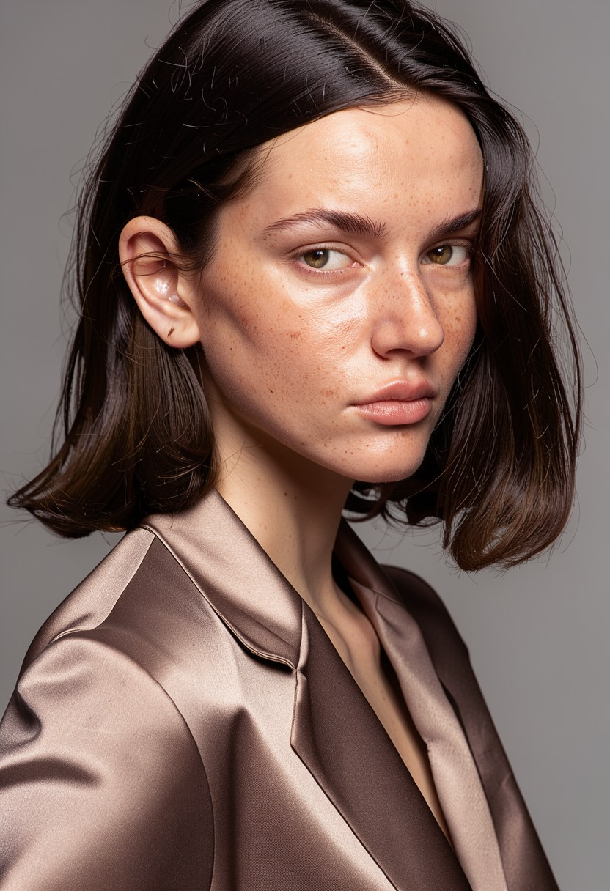
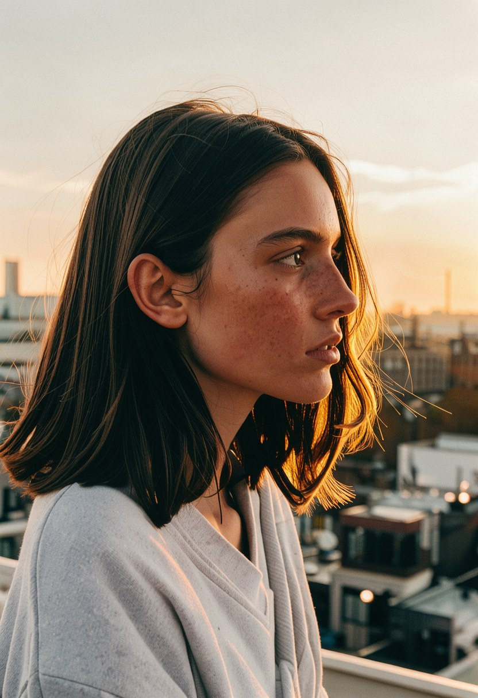
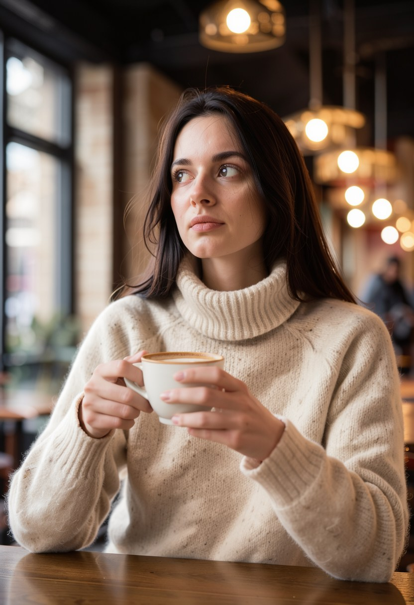
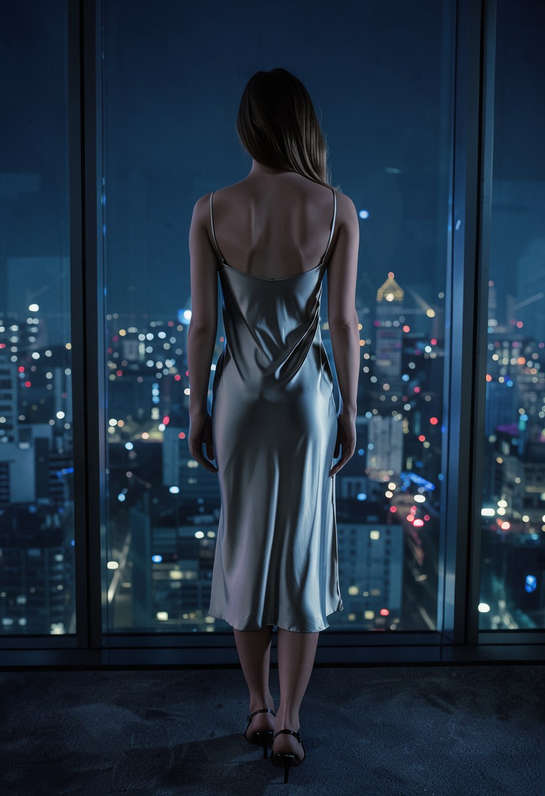
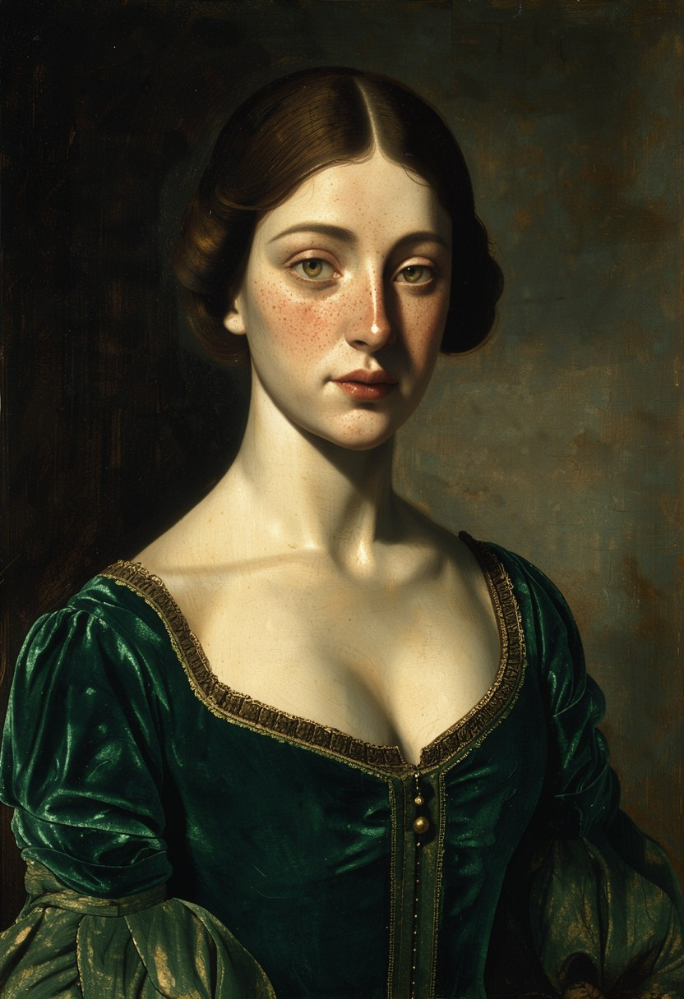
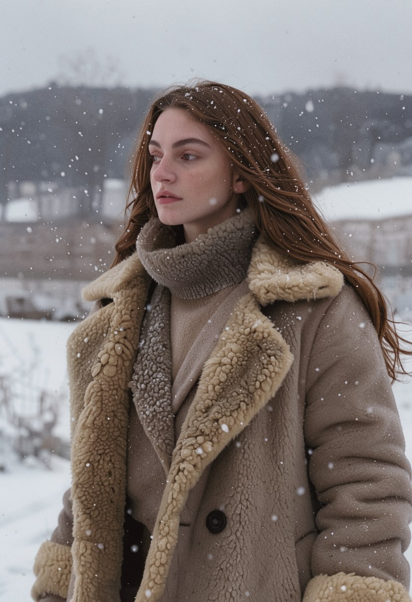

Студийная фотография — это аренда Light, съёмка, ретушь и 8 000 ₽ за час. Нейрофотосессия: присылаете 15–20 обычных снимков с телефона, я дообучаю модель на вашем лице (LoRA) и возвращаю 10–15 финальных кадров в совершенно разных сеттингах — студийный свет, крыша на закате, зимняя улица, живописный портрет. Лицо не уходит ни в один облачный сервис: всё считается здесь, локально.






Разные ракурсы, обычный дневной свет. Никаких студий и профессиональной съёмки не нужно.
Час локального обучения на вашем наборе: модель запоминает черты и мимику — потом достроит их в любых образах.
Обсуждаем, зачем кадры: аватар для LinkedIn, стиль для соцсетей, персонаж для бренда — свет и образ подбираю под это.
10–15 обработанных, полноформатных снимков без водяных знаков. Слабые кадры переснимаем за счёт студии.
Нет. Обучение и генерация проходят локально, оригиналы не размещаются в сети и не передаются третьим лицам. Демка на форме — сгенерированный персонаж, не реальный человек.
Да, в этом смысл LoRA — сохраняются черты, причёска и типаж. Если сходство не устраивает — перетренируем модель на более качественном наборе фото без доплат.
Да, все финальные кадры отдаются с правом коммерческого использования — включая обложки и соцсети бизнеса.
Возьмите пакет «Аватары» — 5 кадров в одной выбранной стилистике, дешевле и быстрее.
Персонаж-демо на странице полностью сгенерирован нейросетью — ключевые черты лица удержаны между шестью совершенно разными сценами. Ваших данных в демо нет.